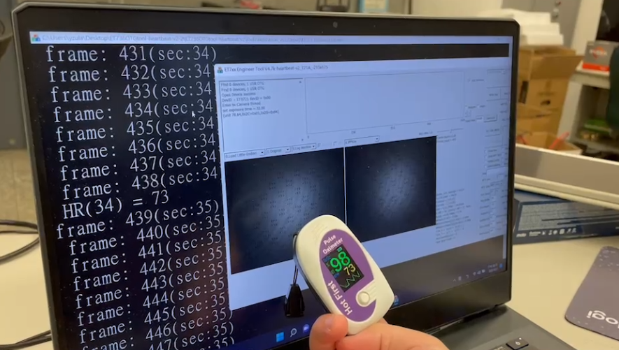
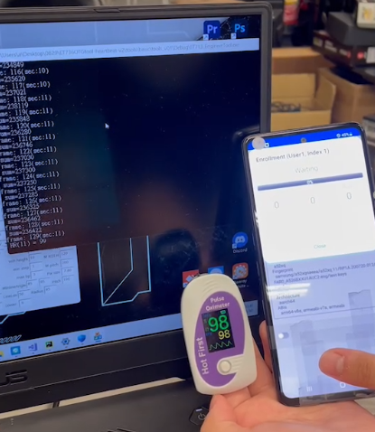

螢幕下指紋心律測量
利用手機螢幕進行PPR訊號的偵測，並利用FFT計算頻率並轉換成心律，無需依賴鏡頭和閃光燈
使用程式：C++
特色與說明
- 無需閃光燈與鏡頭
- 因畫素需求低所以運算速度快
在第一階段，我們需要收集並處理來自影像資訊的訊號。首先，從影像源（例如攝像頭）讀取影像資訊。為了提取脈搏信息，我們對收集到的影像進行綠色通道的遮罩。 這是因為綠色光在血液中的吸收和反射特性較高，可以更好地反映心跳的變化，增強脈搏信號的可見度。我們將為影像中的不同區域分配不同的權重，使用加權區域的脈搏信號來進行運算。
在第二階段，我們將進行心率的計算並引入穩定機制以提高準確性和可靠性。首先，我們將對處理過的心率訊號進行傅立葉轉換，以獲得頻率域的訊息。通過進行頻率分析，我們可以檢測心跳的周期性變化。 然而，由於環境條件和其他因素的影響，單純的頻率分析可能會引入一些誤差。因此，我們需要引入心率修正機制。這可以通過先前的心率測量值來實現，提高計算心率的準確性。 此外，我們還可以使用投票機制來再次提高心率的穩定性。心率計算的結果可能會因不同的算法或方法而略有差異。通過將多個心率計算結果結合起來，我們可以減少誤差並獲得更穩定和可靠的心率估計。
Demo

利用指夾式心律來驗證正確與否

Real-time測量心律使用情形，將測量到的數據先在電腦上顯示出來做驗證